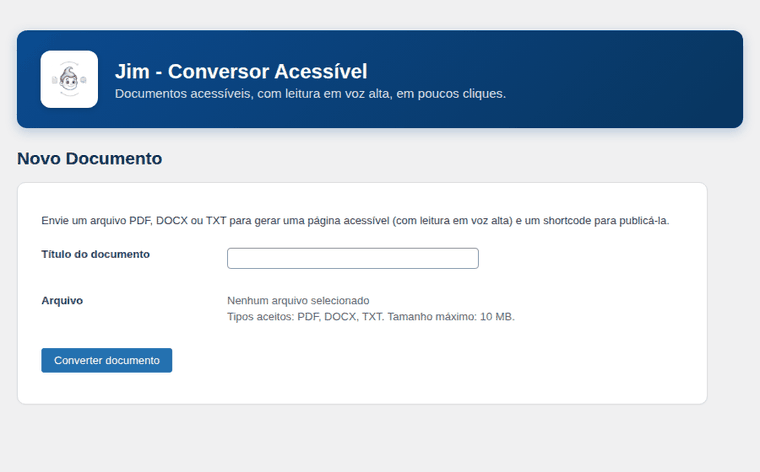

Blogs y revistas
Transforma documentos editoriales en páginas de lectura sin tener que reconstruir el contenido a mano.
2.0Plugin gratuito para WordPress · código abierto
Jim transforma PDF, DOCX, Markdown y TXT en páginas de lectura publicables y accesibles. Tú envías el archivo, Jim organiza el contenido y entrega una página que puedes publicar en tu propio sitio.
Menos trabajo manual para quien publica. Más posibilidades para quien lee.
Ver Jim funcionando en vivo en el blogMuchos de estos contenidos aún llegan al lector como un PDF que hay que descargar, abrir en otro programa y leer en una interfaz que no fue pensada para esa persona.
El problema no es el contenido. Es la forma en que llega.
Jim transforma ese material en contenido HTML dentro de tu propio WordPress, creando una experiencia de lectura que se puede ajustar a las necesidades de quien accede.
Jim puede ser útil para cualquier comunidad que produzca, organice o distribuya contenido.
Transforma documentos editoriales en páginas de lectura sin tener que reconstruir el contenido a mano.
Publica informes, documentos públicos, entrevistas, investigaciones y materiales de apoyo como páginas que se pueden leer directamente en el sitio.
Cuadernillos, materiales didácticos, manuales y contenidos de apoyo pueden ganar una experiencia de lectura más flexible.
Clubes de ajedrez, grupos de coleccionistas, organizaciones culturales, comunidades religiosas o profesionales también producen documentos.
Artículos, textos de investigación, ensayos y materiales de estudio pueden salir del formato de archivo y ganar una página propia de lectura.
Cuando no hay un equipo técnico disponible para convertir cada documento en una página, Jim reduce ese trabajo operativo.
El tema de la comunidad cambia. El problema sigue siendo el mismo: alguien necesita publicar y otra persona necesita poder consumir ese contenido.
El documento convertido aparece en el panel de WordPress con su propio shortcode. Tú eliges dónde publicar y sigues usando la estructura que ya existe en tu sitio.
Jim automatiza una parte del trabajo que normalmente se haría a mano. Transforma en contenido HTML listo para publicar:
Los archivos TXT y Markdown se pueden enviar por lotes, con hasta 20 archivos ligeros a la vez.
[documento_acessivel id="123"] cada documento recibe su propio shortcode
El objetivo no es crear un paso más en el proceso editorial. Es eliminar algunos.
El lector recibe controles para adaptar la experiencia a su propia manera de consumir información.
Hace unos 13.500 millones de años, la materia, la energía, el tiempo y el espacio surgieron en lo que se conoce como el Big Bang.
Unos 300.000 años después, la materia y la energía comenzaron a unirse en estructuras complejas llamadas átomos, que luego se combinaron en moléculas.
Hace unos 70.000 años, organismos de la especie Homo sapiens comenzaron a formar estructuras aún más elaboradas, llamadas culturas.
[documento_acessivel id="123"]La voz es la del navegador de quien lee. Ningún audio sale del equipo.
El contenido permanece como texto en la página, en lugar de depender exclusivamente del archivo original.
La lectura en voz alta utiliza la voz disponible en el navegador del propio lector, con elección de voz, pausa y velocidad. No hace falta contratar una API de síntesis de voz por carácter. Las descripciones de las imágenes también se leen.
El lector puede aumentar o reducir el tamaño del texto y elegir entre distintos temas de lectura.
Hay temas Claro, Sepia y Oscuro, además de una opción de alto contraste.
Los documentos con estructura de títulos pueden mostrar un índice para facilitar la localización de capítulos y secciones.
La barra de lectura acompaña el contenido y se puede ocultar cuando no se necesita.
La experiencia es del lector. El sitio sigue siendo del editor.
Quien lee puede abrir un globo en la página y preguntar sobre ese documento, escribiendo o hablando. Las respuestas aparecen poco a poco, a medida que se generan.
Tú decides si existe, dónde aparece y cómo se comporta: nombre, personalidad, instrucciones y mensaje de bienvenida. Para activarlo, basta con registrar tu propia clave de API.
La clave queda cifrada en tu WordPress, el uso tiene límites por hora y por día, y el panel muestra un registro de lo que ocurre.
El código fuente de Jim está en inglés, y el plugin incluye traducciones al idioma de tu sitio o del usuario. La página de lectura, el panel y el tutorial hablan el idioma de quien los usa.
La lectura en voz alta usa las voces que el navegador del lector ya ofrece, y el contenido se lee en el idioma del propio documento.
Las traducciones quedan en un panel de revisión en WordPress, para que quien publica pueda revisar cada texto.
En Jim, la accesibilidad forma parte de la propia experiencia de lectura. El proyecto se desarrolló tomando como referencia las WCAG 2.1 AA y verifica aspectos como contraste, teclado, foco, semántica y movimiento reducido.
Los tres temas principales se verificaron en los pares de texto y fondo.
Los controles son accesibles por teclado, con foco visible y gestión del foco en los menús.
La estructura utiliza elementos semánticos, role, aria y regiones aria-live cuando es necesario.
Jim respeta prefers-reduced-motion. Esta página hace lo mismo — y además ofrece el botón en la parte superior.
El contenido sigue siendo legible aunque JavaScript no esté disponible. Lo que desaparece son los controles adicionales, no el documento.
Los controles se dimensionaron pensando también en dispositivos móviles, con áreas táctiles amplias.
La accesibilidad aquí no es un sello decorativo. Es una serie de decisiones de producto.
Jim fue pensado para reducir dependencias innecesarias.
Privacidad, seguridad y control no aparecen como funciones extra. Forman parte de la arquitectura.

Cada conversión se almacena en WordPress como un tipo de contenido propio. Eso permite que el documento forme parte de la estructura que ya conoces:
[documento_acessivel id="123"]Aparece en el listado de Documentos, junto a cada conversión.
No necesitas reconstruir la página completa. Solo decides dónde debe aparecer ese contenido.
En la versión 2.0, cada documento puede presentarse como Lector — una experiencia dedicada a la lectura, con barra flotante, voz, temas y navegación — o como Post — una presentación más cercana a un artículo tradicional, con tiempo de lectura, opción de escuchar y de compartir.
Un manual puede ser un lector. Un comunicado puede ser un post. Un cuadernillo puede ser una página de lectura. La elección se hace en la Edición rápida de cada documento, en el panel de WordPress.
Cuando es posible, las imágenes presentes en PDF y DOCX se extraen y se añaden a la Biblioteca de medios de WordPress. En DOCX se conserva el texto alternativo existente. Las imágenes sin descripción reciben una indicación temporal para que el responsable pueda corregirlas antes de publicar.
El documento también puede mostrar las imágenes en un lightbox accesible, con navegación, descripción, contador y cierre por teclado. Porque convertir el texto y olvidar las imágenes sería transferir solo la mitad del problema.
En la versión 2.0, las páginas generadas pueden recibir descripción, Open Graph, Twitter Card, JSON-LD, imágenes asociadas al documento, estructura de lectura y tiempo estimado de lectura en el modo post.
Si ya hay un plugin de SEO compatible activo, Jim evita asumir esa responsabilidad. La idea es complementar WordPress, no competir con cada plugin instalado en él.
En el panel de WordPress, accede a Jim › Nuevo documento y envía el archivo.
Jim procesa el contenido y muestra el avance. Los documentos más grandes pueden procesarse por etapas, sin depender de una única solicitud larga.
El documento aparece en el panel con su contenido, imágenes e información de conversión.
Copia el shortcode y coloca el documento en la página o post que desees.
El archivo entra. Sale una página de lectura.
Las conversiones grandes pueden consumir memoria y tiempo de procesamiento. Por eso Jim tiene límites para las imágenes y mecanismos de protección durante las conversiones más pesadas.
El texto del documento sigue procesándose íntegramente, mientras que las imágenes que superen los límites configurados pueden quedar fuera con una indicación del motivo. Esto permite trabajar con documentos más grandes sin fingir que un servidor compartido tiene recursos infinitos.
Puedes usar, estudiar, modificar y redistribuir el proyecto, incluso en proyectos comerciales, respetando los términos de la licencia.
Cada versión se puede seguir por el historial del proyecto, y los problemas se pueden informar directamente en el repositorio.
Instálalo directamente desde la pantalla de Plugins de tu sitio y recibe las actualizaciones allí, como con cualquier otro plugin.
No importa si tu comunidad habla de:
Si hay conocimiento que se produce, se organiza y se comparte, hay alguien intentando publicarlo. Jim existe para hacer ese proceso más simple para quien publica y más flexible para quien lee.
Gratuito, de código abierto y dentro de tu propio WordPress.
Cualquier persona o equipo que use WordPress y necesite convertir documentos en páginas de lectura. Esto incluye blogs, revistas, periodistas, escuelas, asociaciones, comunidades, proyectos independientes, investigadores y organizaciones.
PDF con texto seleccionable, DOCX, Markdown y TXT.
No. Un PDF formado solo por imágenes no tiene texto que la conversión pueda extraer.
No. La conversión ocurre en el propio servidor de WordPress, sin API externa.
No. La lectura utiliza la voz disponible en el navegador de quien está leyendo.
Solo si tú quieres. El asistente de IA viene desactivado: para activarlo, el administrador registra la clave propia de un proveedor compatible (OpenRouter, Claude, OpenAI, Gemini o DeepSeek). La conversión y la lectura en voz alta nunca dependen de la IA.
Portugués de Brasil, español, francés, chino simplificado, hindi, ruso y alemán, según el idioma del sitio o del usuario.
No. El documento convertido recibe un shortcode que se puede colocar en una página o post existente.
Sí. El proyecto se distribuye bajo GPL v2 o posterior, respetando los términos de la licencia.
No. Proporciona metadatos específicos para las páginas generadas y desactiva esa parte cuando detecta plugins de SEO compatibles.
No hay motivo para prometerlo como si una herramienta pudiera sellar todo un sitio como «accesible» y marcharse. Jim se desarrolla y prueba con criterios de las WCAG 2.1 AA, cubriendo aspectos específicos de la experiencia que controla. La accesibilidad final también depende del contenido, del tema, de WordPress y de otras partes del sitio.